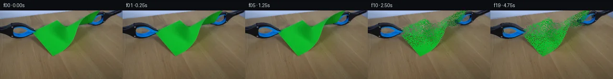

![首帧]()

Round 00
2026-11-05T11:04:13.989765+00:00像素候选变化代码 +302/−0inspection 更新
pixels ee4f9b0c68b9c4ff · code b947322dcb090ff3
查看本轮 generate.py 真实 diff
--- previous/generate.py
+++ current/generate.py
@@ -0,0 +1,302 @@
+#!/usr/bin/env python3
+"""
+generate.py — PixelWorld-Text Case 0043
+Paper tear animation: two blue-black grabber tools pull green paper
+from opposite corners, causing it to tear.
+20 frames, 256×144, 4 fps, 5 seconds.
+"""
+
+import numpy as np
+from PIL import Image
+from pathlib import Path
+import sys
+
+# Add workspace to path for artifact_io
+sys.path.insert(0, str(Path(__file__).parent))
+from artifact_io import save
+
+CASE_DIR = Path(__file__).parent
+TMP = CASE_DIR / '.tmp'
+TMP.mkdir(exist_ok=True)
+
+H, W = 144, 256
+N_FRAMES = 20
+FPS = 4
+
+# ─── Step 0: Load first frame ───────────────────────────────────────────────
+frame0 = np.array(Image.open(CASE_DIR / 'first_frame.png')).astype(np.float64)
+assert frame0.shape == (H, W, 3), f"Bad shape: {frame0.shape}"
+
+# ─── Step 1: Create masks ───────────────────────────────────────────────────
+r0, g0, b0 = frame0[:, :, 0], frame0[:, :, 1], frame0[:, :, 2]
+
+# Paper mask: green-dominant pixels
+paper_mask = (g0 > r0 + 8) & (g0 > b0 + 8)
+
+# Grabber mask: blue-dominant or dark-neutral metallic
+grabber_mask = np.zeros((H, W), dtype=bool)
+for y in range(H):
+ for x in range(W):
+ rv, gv, bv = r0[y, x], g0[y, x], b0[y, x]
+ if paper_mask[y, x]:
+ continue
+ if bv > rv + 3 and bv > gv + 3 and rv < 140 and gv < 140:
+ grabber_mask[y, x] = True
+ elif rv < 90 and gv < 90 and bv < 90 and abs(rv - gv) < 20 and abs(rv - bv) < 20 and abs(gv - bv) < 20:
+ grabber_mask[y, x] = True
+
+# Background mask
+bg_mask = ~paper_mask & ~grabber_mask
+
+# Split grabbers into left and right halves
+mid_x = W // 2
+left_grabber_mask = grabber_mask.copy()
+left_grabber_mask[:, mid_x:] = False
+right_grabber_mask = grabber_mask.copy()
+right_grabber_mask[:, :mid_x] = False
+
+# ─── Step 2: Identify grip points ───────────────────────────────────────────
+from scipy import ndimage
+paper_dilated = ndimage.binary_dilation(paper_mask, structure=np.ones((3, 3)))
+
+# Grip: grabber pixels touching paper
+left_grip_mask = left_grabber_mask & paper_dilated
+right_grip_mask = right_grabber_mask & paper_dilated
+
+left_grip_ys, left_grip_xs = np.where(left_grip_mask)
+right_grip_ys, right_grip_xs = np.where(right_grip_mask)
+
+left_grip_y = left_grip_ys.mean() # ~44.9
+left_grip_x = left_grip_xs.mean() # ~70.5
+right_grip_y = right_grip_ys.mean() # ~17.1
+right_grip_x = right_grip_xs.mean() # ~196.5
+
+print(f"Left grip centroid: ({left_grip_y:.1f}, {left_grip_x:.1f})")
+print(f"Right grip centroid: ({right_grip_y:.1f}, {right_grip_x:.1f})")
+
+# Tear direction and perpendicular
+tear_dy = right_grip_y - left_grip_y # negative
+tear_dx = right_grip_x - left_grip_x # positive
+tear_len = np.sqrt(tear_dy**2 + tear_dx**2)
+tear_uy, tear_ux = tear_dy / tear_len, tear_dx / tear_len # unit vector along tear
+
+# Perpendicular (rotated 90° CCW) — this separates left/right sides
+perp_uy, perp_ux = -tear_ux, tear_uy # (-tear_ux, tear_uy)
+
+# Center of the paper region
+paper_ys, paper_xs = np.where(paper_mask)
… diff truncated; 215 more lines …